Fresh Informatics graduate passionate about artificial intelligence, backend engineering, and system design, building intelligent, scalable, and reliable software for real-world problems.

I'm Muthia Khanza, an Informatics graduate from Universitas Jenderal Soedirman, focused on Artificial Intelligence, System Design, Backend Development, Data, and Machine Learning. I love turning ideas into apps people actually use.
At BPS Tasikmalaya City, I built an AI chatbot for KBLI code classification. At Diskominfo Tasikmalaya Regency, I developed a Laravel-based knowledge management system for internal operations.
I work carefully and structured always understanding the root cause before jumping to a solution. For me, good tech isn't just running, it's maintainable, pleasant to use, and built to grow.
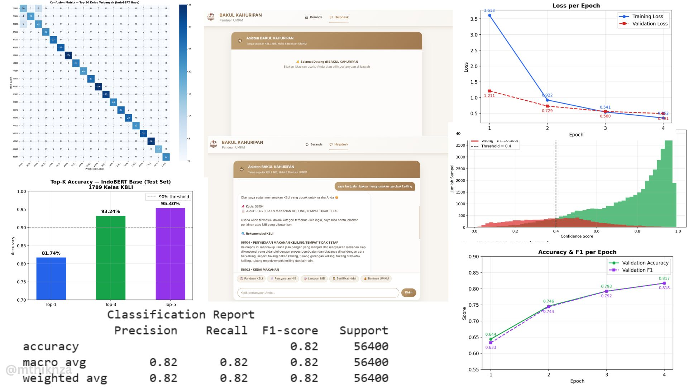
Chatbot berbasis IndoBERT yang membantu pelaku UMKM menentukan kode KBLI 5 digit dengan lebih mudah dan cepat. Dataset dikumpulkan melalui web scraping, kemudian dilatih menggunakan model klasifikasi IndoBERT di Google Colab. Untuk mengatasi ketidakseimbangan data pada proses pelatihan, diterapkan teknik augmentasi data dan random undersampling, menghasilkan akurasi model sebesar 95% pada top-3 accuracy. Model kemudian diintegrasikan dengan Flask untuk membangun antarmuka chatbot, serta Gemini API agar respons yang dihasilkan lebih natural dan mudah dipahami pengguna.
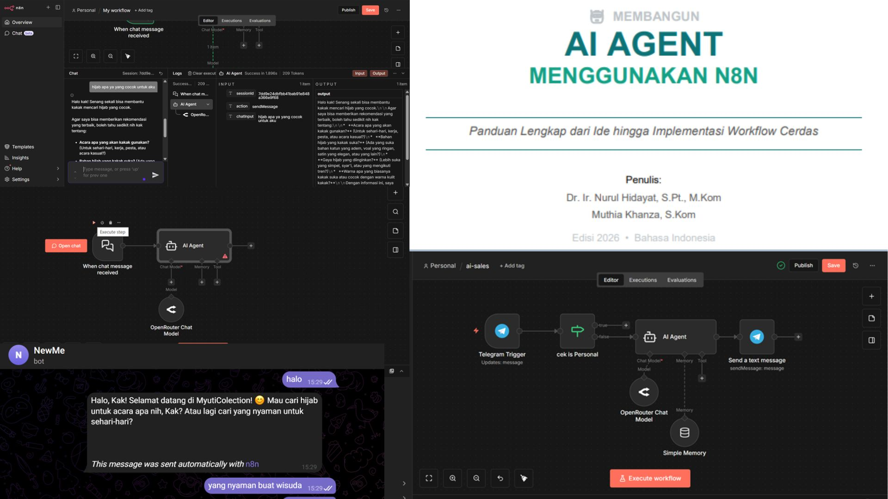
Proyek kolaborasi bersama dosen pembimbing untuk menyusun buku tutorial n8n. Berperan sebagai AI Engineer, saya merancang dan membangun beberapa studi kasus AI automation, di antaranya sistem pengiriman email otomatis dan chatbot Telegram berbasis n8n, lengkap dengan penjelasan penggunaan node-node inti untuk membantu pembaca memahami konsep automation dari dasar hingga penerapan nyata.
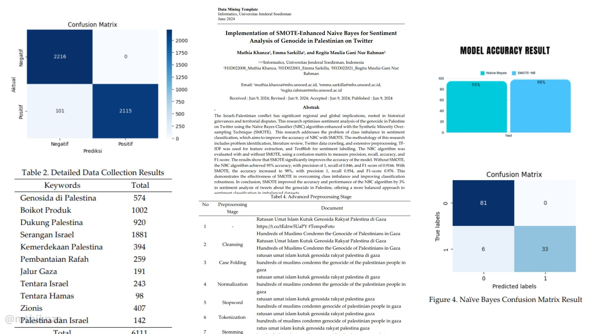
Project data mining untuk analisis sentimen masyarakat pada aplikasi X terhadap genosida yang terjadi di Palestina, menggunakan metode Naive Bayes. Karena ditemukan ketidakseimbangan data pada dataset, diterapkan teknik SMOTE (Synthetic Minority Oversampling Technique) untuk menyeimbangkan kelas data, sehingga akurasi model meningkat dari 95% (Naive Bayes saja) menjadi 98% setelah penerapan SMOTE.
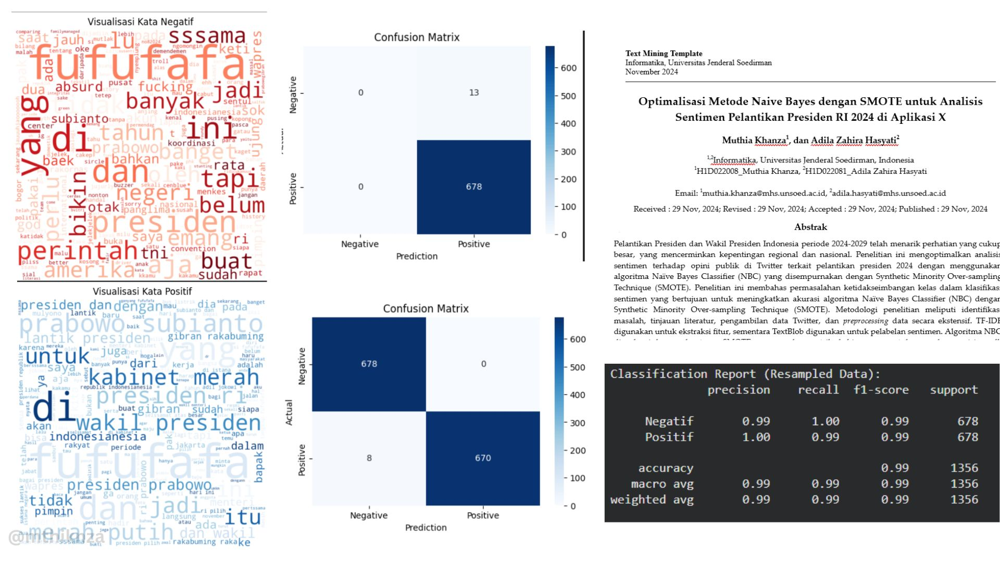
Project data mining untuk analisis sentimen masyarakat terhadap Pelantikan Presiden RI 2024 berdasarkan data dari aplikasi X (Twitter), dikerjakan menggunakan Google Colab. Menerapkan metode yang sama seperti project analisis sentimen sebelumnya, yaitu Naive Bayes yang dikombinasikan dengan SMOTE untuk menangani ketidakseimbangan data, dan berhasil mencapai akurasi model sebesar 99%.
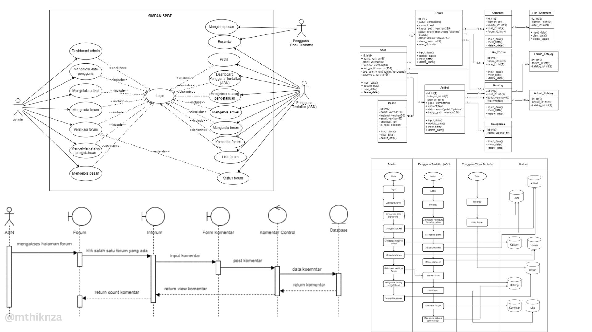
Perancangan system design untuk SIMPAN (Sistem Penyimpanan Ilmu Pengetahuan Pemerintahan), disusun menggunakan draw.io mulai dari flowchart untuk menggambarkan alur sistem secara keseluruhan, use case diagram untuk memetakan interaksi antara pengguna dan sistem, sequence diagram untuk setiap fitur berbasis arsitektur MVC, hingga activity diagram untuk menggambarkan alur proses bisnis pada setiap modul. Dokumen ini menjadi acuan teknis dalam tahap perancangan sebelum masuk ke proses development.
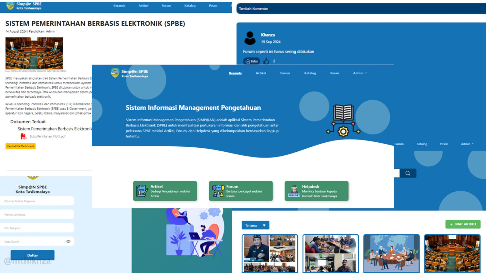
SIMPAN (Sistem Penyimpanan Ilmu Pengetahuan Pemerintahan) adalah sistem manajemen pengetahuan yang dibangun berdasarkan arahan BRIN kepada setiap Diskominfo di berbagai wilayah, kini digunakan secara aktif oleh 3-5 divisi di Diskominfo Kota Tasikmalaya. Dibangun menggunakan Laravel 11 dengan Livewire untuk fitur interaksi real-time seperti komentar dan berbagi dokumen. Saya berperan sebagai backend developer, mengembangkan fungsionalitas CRUD penuh yang meningkatkan efisiensi alur kerja internal hingga 40-50%.
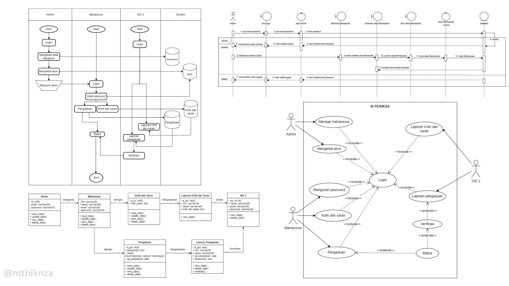
Perancangan system design untuk SI Periksa (Sistem Informasi Pengaduan Kritik dan Saran), disusun menggunakan draw.io mulai dari flowchart untuk menggambarkan alur sistem secara keseluruhan, use case diagram untuk memetakan interaksi antara pengguna dan sistem, sequence diagram untuk setiap fitur berbasis arsitektur MVC, hingga activity diagram untuk menggambarkan alur proses bisnis pada setiap modul. Dokumen ini menjadi acuan teknis dalam tahap perancangan sebelum masuk ke proses development.
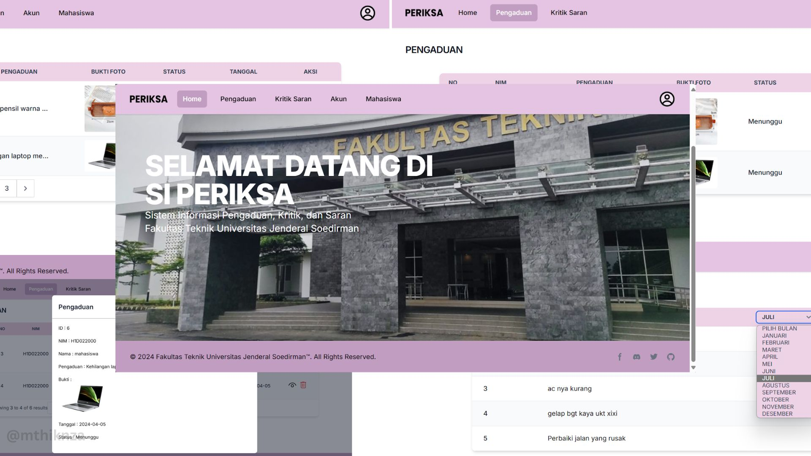
SI PERIKSA (Sistem Informasi Pengaduan Kritik dan Saran) adalah aplikasi web yang dibangun menggunakan Laravel 11 sebagai project mata kuliah Pemrograman Web. Digunakan oleh mahasiswa fakultas untuk melaporkan kejadian yang dialami di area kampus, serta menyampaikan kritik dan saran terhadap kebijakan kampus, dengan alur kerja yang jelas mulai dari pengajuan, pelacakan status, hingga penyelesaian pengaduan.
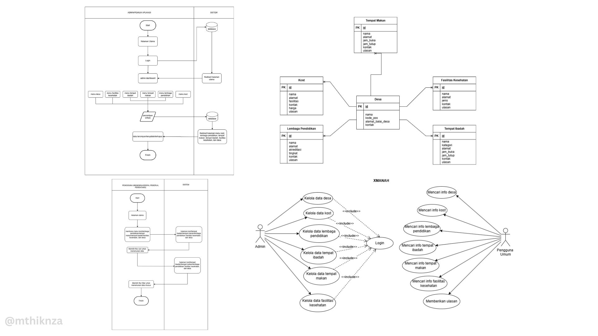
System design untuk XMANAH, aplikasi mobile yang berfungsi sebagai "peta bantuan" bagi mahasiswa dan pendatang baru di sekitar Fakultas Teknik Universitas Jenderal Soedirman, Kecamatan Kalimanah — membantu mereka menemukan kost, tempat makan, tempat ibadah, hingga fasilitas umum seperti sekolah di sekitar kampus. Mencakup penyusunan komponen UI, tipografi, palet warna, dan pedoman desain agar tampilan aplikasi konsisten dan mudah digunakan.
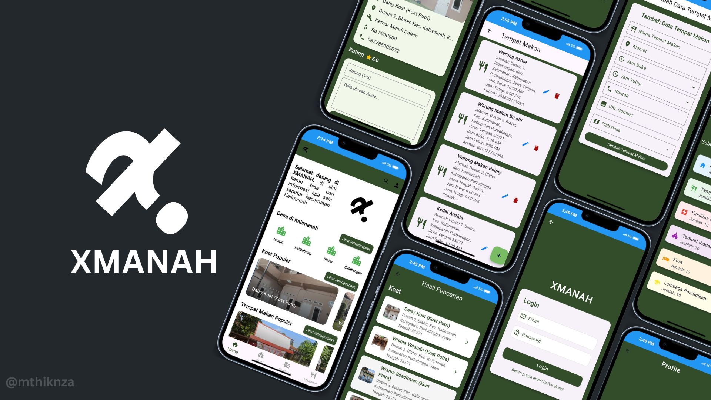
Aplikasi mobile XMANAH yang berfungsi sebagai "peta bantuan" bagi mahasiswa dan pendatang baru di sekitar Fakultas Teknik Universitas Jenderal Soedirman, Kecamatan Kalimanah — membantu mereka menemukan kost, tempat makan, tempat ibadah, hingga fasilitas umum seperti sekolah di sekitar kampus. Dibangun menggunakan Flutter dengan Firebase sebagai database dan backend. Saya memimpin proyek ini dari tahap perancangan hingga rilis.
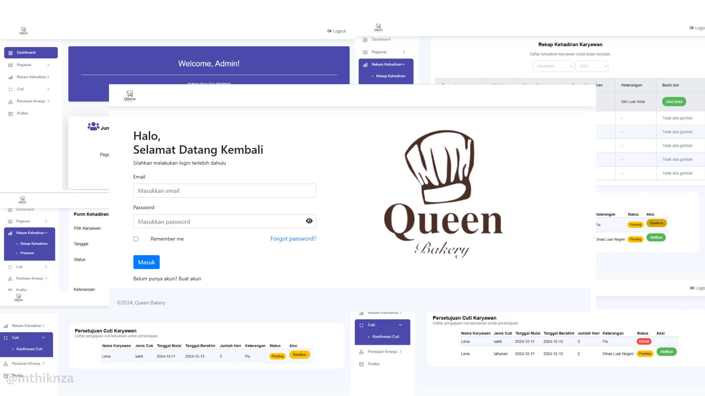
Aplikasi web ERP untuk manajemen kepegawaian sebagai project mata kuliah, dibangun menggunakan Laravel. Mencakup fitur pengajuan cuti, pencatatan kehadiran pegawai, serta penilaian kinerja pegawai, dengan struktur data yang rapi dan alur kerja organisasi yang jelas antar peran/divisi.
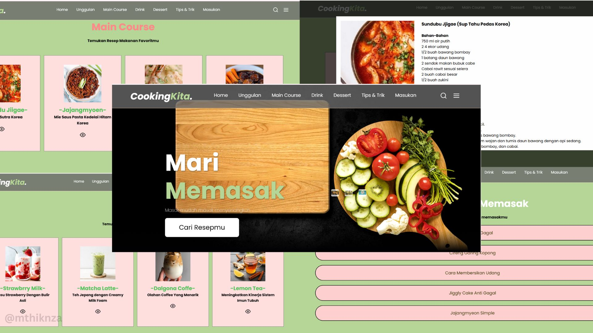
Website katalog resep masakan yang dibangun menggunakan HTML, CSS, dan JavaScript murni sebagai proyek awal perkuliahan (semester 2). Dikerjakan bersama tim, dengan salah satu ide utama menampilkan video di bagian hero section untuk memberikan kesan yang lebih hidup dan menarik saat pertama kali dibuka. Proyek ini menjadi langkah awal dalam memahami dasar-dasar pengembangan web statis dan tampilan antarmuka yang responsif.
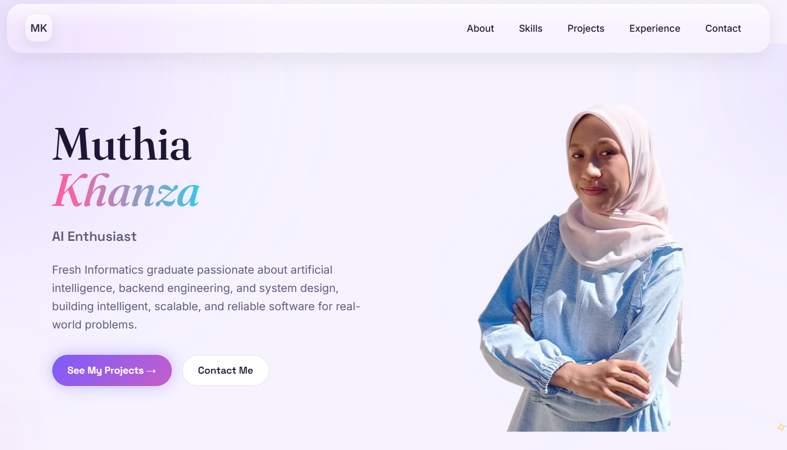
Website portofolio pribadi yang dibangun menggunakan HTML, CSS, dan JavaScript murni untuk menampilkan profil, skill, serta kumpulan project yang telah saya kerjakan. Dirancang dengan tampilan yang bersih dan responsif, termasuk animasi reveal saat scroll dan hero section yang interaktif, sebagai representasi digital dari perjalanan dan kemampuan saya di bidang teknologi.
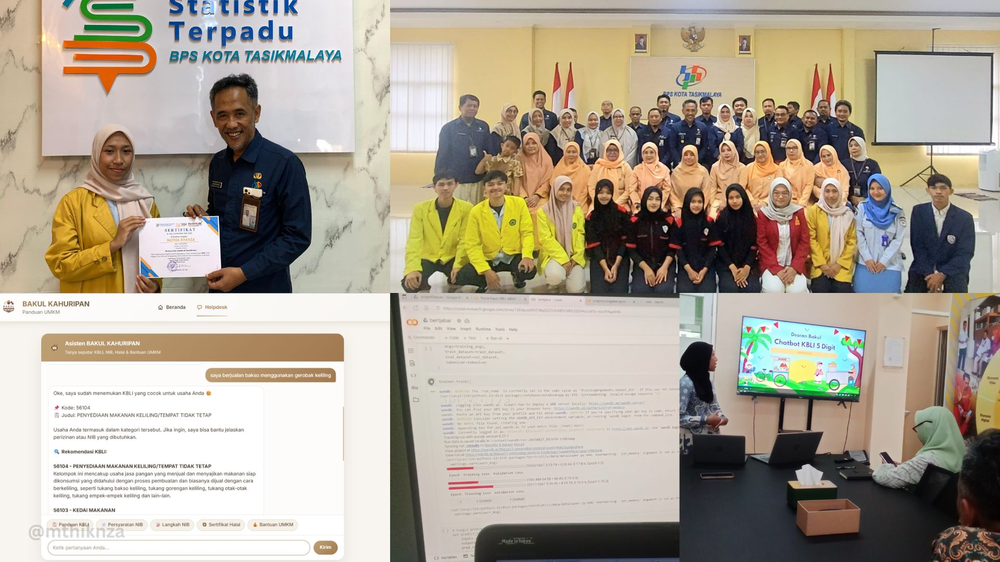
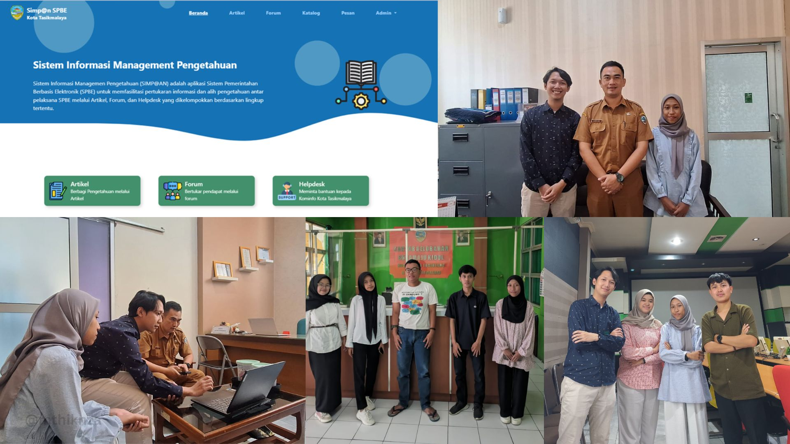
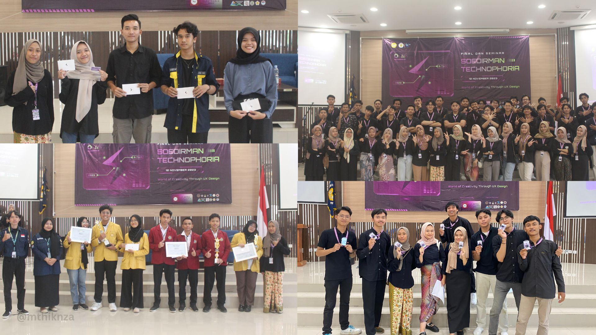
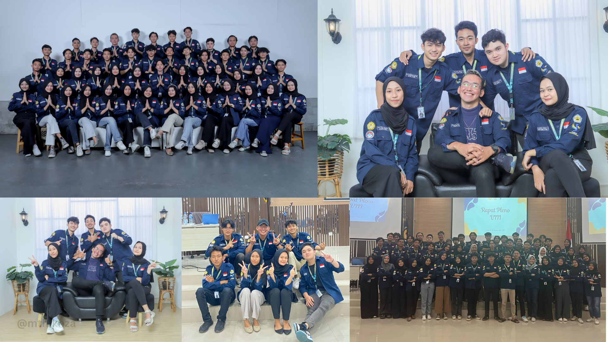
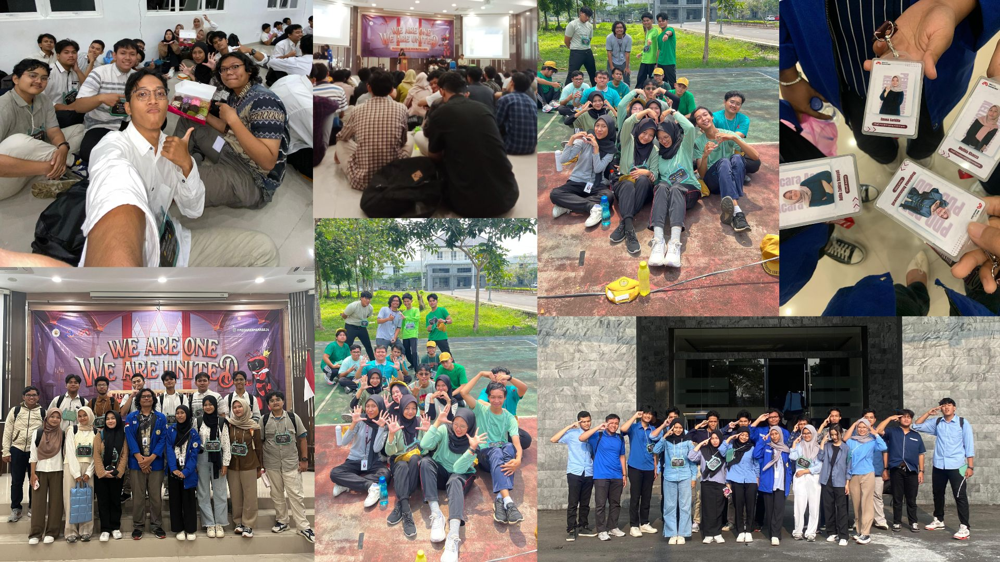
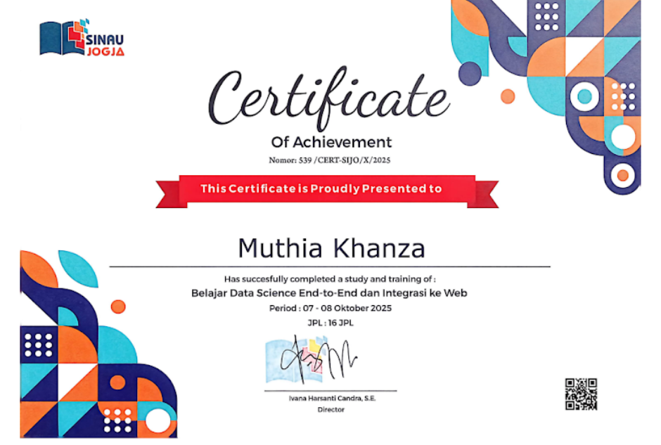

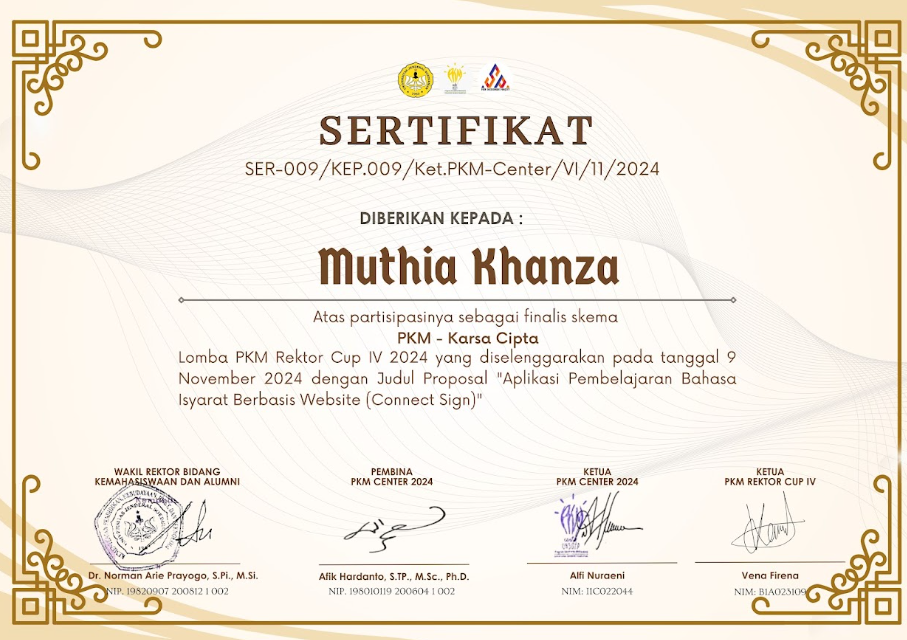
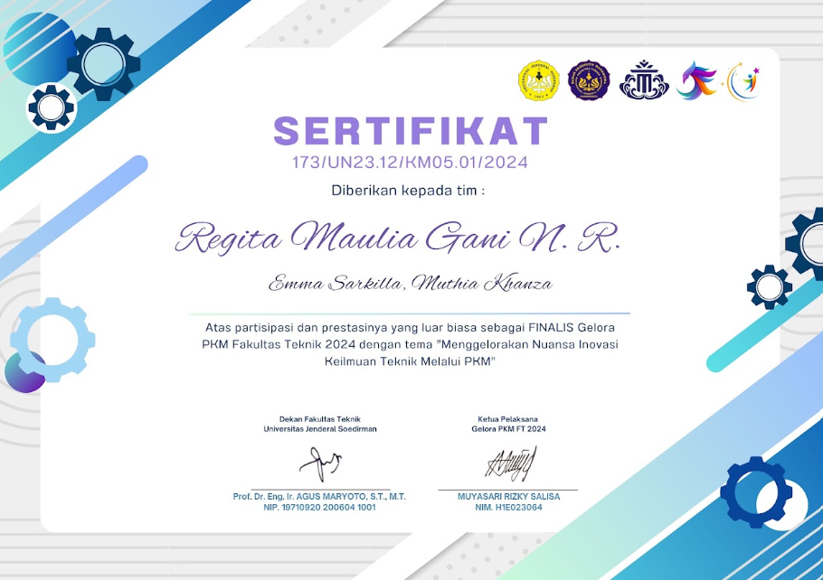
I'm open to backend developer, data scientist, or ML engineer roles. If we sound like a good fit, don't hesitate to reach out!